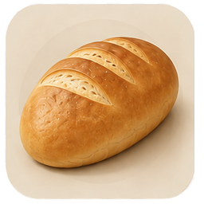
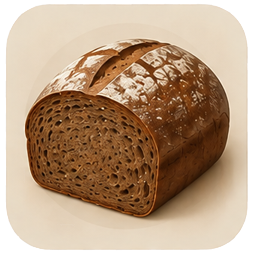
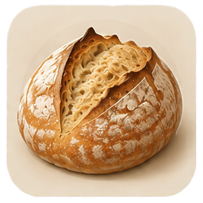
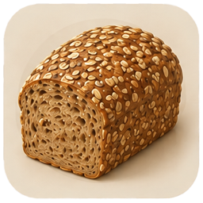
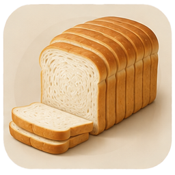
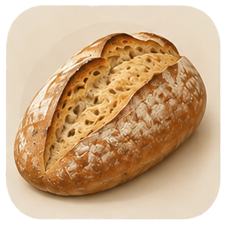
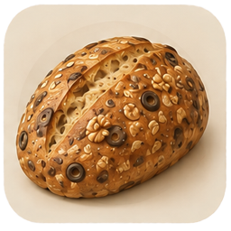

Хліб

Пшеничний хліб
Класичний, на білій муці

Житній / житньо-пшеничний
Суцільна чи змішана житня мука

Заквасочний хліб
На основі Закваски або Левену

Цільнозерновий / багатозерновий
Обойна мука, суміші зерна

Формовий / тостовий хліб
Pan bread, сендвічний

Сільський хліб
Pain de campagne, буль, батард

Хліб з добавками
Горіхи, насіння, оливки тощо
Home
Калькулятор
Рецепти
Профілі
Про додаток